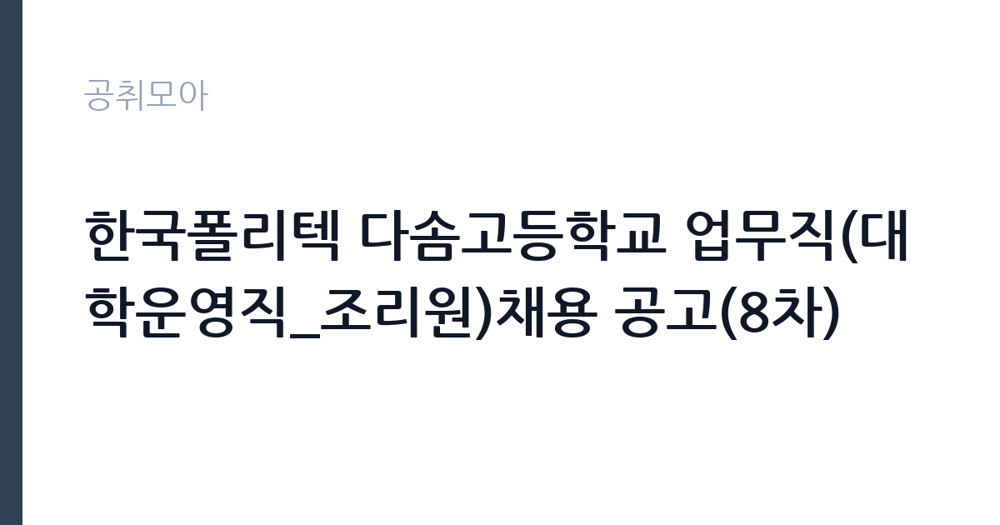

[공공기관] 한국폴리텍 다솜고등학교 업무직(대학운영직_조리원)채용 공고(8차)
학교법인한국폴리텍 · 충북 · 마감 2026-11-10 (D-7) · 출처 잡알리오

한눈에 보는 모집 조건
| 기관 | 학교법인한국폴리텍 |
|---|---|
| 공고명 | 한국폴리텍 다솜고등학교 업무직(대학운영직_조리원)채용 공고(8차) |
| 고용형태 | 공무직 |
| 근무지 | 충북 |
| 게시일 | 2026-11-03 |
| 마감일 | 2026-11-10 (D-7) |
지원자격, 이렇게 읽으세요
- 보건증) 소지자](임용예정일 기준 유효기간 내 소지자)
- 최종합격자 발표 후 즉시 근무 가능한 자 (2026.12.1.
공무직 근로자는 공무원이 아니라 근로기준법이 적용되는 근로자이지만 기간의 정함이 없는 무기계약으로 채용되는 경우가 많아 정년까지 근무가 가능합니다. 채용은 공무원 시험과 달리 기관의 자체 전형으로 진행되고 인사 규정과 임금표를 적용받습니다. 이번 공고는 학교법인한국폴리텍이 직접 진행하는 자체 전형입니다. 조리 직무는 조리사 자격증 소지자를 요구하거나 우대하는 경우가 많습니다. 최근에는 위생교육 이수와 건강진단 결과를 제출해야 하므로 채용 전 건강 상태를 준비해야 합니다. 대체인력이나 단기 계약으로 채용되면 근무 기간이 명시되며, 기존 직원의 휴직이나 출산휴가 기간과 맞물리는 경우가 흔합니다. 급식 인원과 조리 인력이 정해져 있어 혼자서 많은 양을 처리해야 할 수 있습니다. 우대 사항은 증빙이 없으면 반영되지 않으므로 해당 여부를 먼저 확인해야 합니다. 공고문의 응시자격 표를 보면 자격 항목이 여러 줄로 나뉘어 있으므로, 각 줄을 하나씩 체크하며 본인 해당 여부를 표시해 두면 누락을 줄일 수 있습니다. 응시 자격 판단이 애매하다면 접수 전에 채용 담당 부서로 문의하는 편이 안전합니다. 서류 제출 후에는 소명 기회가 없습니다. 이 공고 원문에 적힌 응시 조건 문구는 '(학력·성별) 제한 없음' / '보건증) 소지자](임용예정일 기준 유효기간 내 소지자)'입니다. 문구를 그대로 읽고 본인 해당 여부를 하나씩 표시해 두면 서류 단계에서 탈락하는 일을 줄일 수 있습니다.
이 공고의 포인트
이 공고의 첫 번째 포인트는 고용 형태입니다. 무기계약으로 채용되면 정년까지 근무가 가능해 재계약 부담이 없습니다. 반대로 기간제로 채용되는 공고라면 계약 기간을 먼저 확인해야 합니다. 두 번째는 업무 범위가 명확하다는 점입니다. 조리·급식 직무로 채용되므로 배치 이후 담당 업무가 크게 흔들리지 않습니다. 세 번째는 근무지입니다. 충북 지역 근무로 수도권 공고에 비해 지원자 분포가 넓지 않아 상대적으로 경쟁이 분산되는 경우가 있습니다. 처우와 근무 형태가 표로 정리되어 있어 비교해 보기에 편한 공고입니다. 같은 직무로 함께 올라온 공고 7건 가운데 마감이 중간에 위치하므로 다른 공고와 일정이 겹치는지 확인하십시오. 선발 인원은 공고문에 명시되어 있으니 모집분야 항목을 함께 확인하십시오.
전형은 어떻게 진행되나
서류전형과 면접전형 외에 직무수행능력 평가가 붙는 경우가 있습니다. 평가 방식은 공고문에 구체적으로 적혀 있으므로 어떤 항목에 배점이 높은지 먼저 파악하십시오. 면접에서는 지원 동기보다 실제 업무 경험에 대한 질문이 많고, 답변의 구체성이 평가를 가릅니다. 전형 일정은 서류 마감 이후 빠르게 진행되므로 연락 가능한 번호를 정확히 기재하고 문자와 메일을 수시로 확인해야 합니다. 최종 단계에서는 결격사유 조회와 신체검사가 진행됩니다. 경력 증명서에 직무 내용이 적혀 있지 않으면 인정받지 못할 수 있으므로 상세 기재를 요청하십시오.
원문에서 확인한 전형 방식
○ (연령) 공고마감일 현재 만 18세 이상 만 60세 미만인 자 (정년 만 60세) ○ (학력·성별) 제한 없음 ○ 학교법인 인사규정 제19조 등 결격사유에 해당하지 않는 자로, 남자의 경우 병역을 필하였거나 면제된 자 ○ 해당 직무 수행이 가능한 자 ○ 식품위생법 제40조 제1항 및 같은 법 시행규칙 제3조2항에 따른 [식품위생 분야 종사자 건강진단 결과서(구. 보건증) 소지자](임용예정일 기준 유효기간 내 소지자) ○ 최종합격자 발표 후 즉시 근무 가능한 자 (2026.12.1. 임용 예정)
이런 분께 추천해요
- 조리사 자격 또는 급식 조리 경력이 있는 분
- 위생 수칙을 습관적으로 지키는 분
- 이른 출근과 정해진 배식 시간을 지킬 수 있는 분
지원 전 체크리스트
- 응시자격 요건과 경력 기준을 충족하는가 — 경력은 증명서로 입증해야 합니다
- 무기계약 여부와 정년 기준을 공고문에서 확인했는가
- 제출서류 목록을 모두 준비했는가 — 누락 시 서류 단계에서 탈락합니다
- 접수 마감 2026-11-10 이전에 접수 방식을 확인해 제출했는가
모집 일정과 제출 타이밍
2026-11-03에 공고가 올라왔고 접수는 2026-11-10까지입니다. 남은 기간은 7일이며, 이 기간에 자격증 사본과 경력증명서, 주민등록등본 같은 기본 서류를 모두 준비해야 합니다. 경력증명서는 발급에 며칠이 걸리는 경우가 있으니 가장 먼저 신청하십시오. 접수는 온라인과 우편·방문으로 나뉘는 경우가 많고, 우편 접수는 도착 기준으로 판정되므로 마감일 소인만 믿으면 안 됩니다. 면접 일정은 서류 발표 후 개별 통보되므로 제출 후에도 연락을 받을 수 있도록 유지해야 합니다. 공휴일이 끼어 있으면 증명서 발급이 늦어질 수 있으니 발급 일정을 앞당기십시오.
직무 이해하기: 공공기관
교육기관은 학교 교육과 교원 연수, 교육 행정을 담당합니다. 교육청은 관내 학교를 지원하고, 대학은 학사와 연구, 학생 지원 업무를 운영합니다. 예산과 인사 규정이 교육부 지침과 자체 규정을 함께 따르므로 절차가 엄격합니다. 조리 업무는 급식 인원에 맞춰 식단을 준비하고 배식하는 일입니다. 재료 검수와 손질, 조리, 배식, 세척, 잔반 처리까지 하루 주기가 정해져 있습니다. 위생 관리 기준에 따라 냉장고 온도와 조리 기구 소독 상태를 기록하고 식중독 예방 수칙을 지켜야 합니다. 학교나 복지시설, 부대 급식소처럼 대상이 정해진 곳에서는 알레르기 유발 식품 표시와 식단표 관리도 업무에 포함됩니다. 아침과 점심 시간에 맞춰 이른 출근이 필요한 경우가 많습니다. 실무는 선임자와 짝을 이뤄 익히는 방식이 일반적이라 첫 달은 교육과 현장 적응에 쓰입니다. 업무 강도와 근무 시간대는 부서 배치에 따라 달라지므로 면접에서 확인하는 것이 가장 정확합니다. 이 건의 근무 대상 지역·부서는 원문 기준 '대학운영직_조리원'입니다.
자기소개서 작성 팁
조리 지원서는 위생과 안전에 대한 습관을 증명하는 데 집중하십시오. 이전 근무지에서 지킨 위생 수칙, 대량 조리 경험, 식단 관리 경험을 구체적으로 쓰십시오. 인원이 적은 급식소에서는 혼자 여러 업무를 처리해야 하므로 동시에 여러 작업을 진행한 경험이 소재가 됩니다. 장기 근무 의사와 이른 출근 가능 여부도 함께 밝히십시오. 직무 경험이 많지 않다면 경험의 양보다 과정을 구체적으로 쓰는 편이 낫습니다. 어떤 상황에서 무엇을 판단했고 어떤 결과가 나왔는지 순서대로 서술하면 신뢰가 생깁니다. 지원 동기와 기여 방안은 한 문단씩 짧게 유지하고, 가장 자신 있는 경험에 분량을 몰아주십시오. 마지막 문장은 포부보다 구체적인 실행 계획으로 끝내는 것이 좋습니다.
면접 준비 포인트
면접에서는 위생 관리와 팀 협업 태도를 확인합니다. 조리 중 위생 사고를 예방하기 위해 어떤 절차를 지키는지, 식단이 갑자기 바뀌면 어떻게 대응하는지, 동료와 역할이 겹칠 때 어떻게 조율하는지를 묻습니다. 조리 자격과 경력은 서류에서 확인되므로 면접에서는 실제 작업 속도와 안전 관리 방식을 보여주는 것이 좋습니다. 지원 기관의 최근 사업이나 조직 개편 내용을 확인해 두면 지원 동기 질문에서 차이가 납니다. 면접 당일 신분증과 제출서류 원본을 요구하는 경우가 있으니 공고문의 준비물 목록을 확인하십시오.
급여·근무조건 읽는 법
조리 직무의 보수는 기관의 직종별 임금표를 따르며, 기본급에 정액급식비와 명절휴가비, 초과근무수당이 더해집니다. 조리사 자격이나 경력에 따라 호봉이 달라지는 경우가 있으므로 경력을 증빙할 수 있는 자료를 준비하면 유리합니다. 2026년 최저임금은 시급 10,320원, 월 환산 2,156,880원이며, 단시간 근무라면 근무 시간에 비례해 계산합니다. 실제 금액은 공고문의 처우 항목에서 확인하십시오. 대체인력 채용은 계약 기간이 짧아 총 급여 규모도 함께 따져야 합니다. 다만 학교법인한국폴리텍의 보수 수치는 이 글에서 확인된 공시 자료가 없어 추정해 제시하지 않았습니다. 공고문 처우 항목과 첨부된 보수표를 기준으로 확인하십시오. 알리오 2025년 결산 공시 기준 공공기관 전체 일반정규직 1인당 평균보수는 7,376만 9천원, 신입사원 평균초임은 4,031만 6천원입니다(무기계약직 미포함). 2026년 적용 최저임금은 시급 10,320원, 월 환산 2,156,880원(주 40시간·209시간 기준)입니다. 고용노동부 고시 제2025-47호로 확정된 금액입니다. 공고문에 금액이 제시되지 않은 항목은 원문 보수표나 처우 설명에서 확인해야 하며 확인되지 않은 수치는 쓰지 않는 것이 원칙입니다. 비교할 때는 월 급여뿐 아니라 상여·명절휴가비·복지포인트·초과근무수당까지 포함한 연간 총액으로 계산하십시오. 기간제라면 계약 기간 동안의 총액을, 무기계약이라면 호봉 상승과 정년까지의 누적 소득을 기준으로 판단하는 편이 정확합니다.
자주 묻는 질문
- 선발 인원은 몇 명인가요?
공고문의 모집분야 항목에 직종별 인원이 표로 제시되어 있습니다. 첨부된 공고문 원문에서 확인하십시오. - 근무지는 어디인가요?
충북 지역의 학교법인한국폴리텍 소속 근무지입니다. 세부 주소와 출퇴근 조건은 원문 공고문에서 확인할 수 있습니다. - 보수는 얼마인가요?
채용 신분(공무직)과 기관 임금 규정에 따라 정해지며 구체적인 금액은 공고문 처우 항목에 제시됩니다. 금액이 공개되지 않은 경우에는 원문의 보수표를 확인하십시오.
함께 보면 좋은 공고
[공공기관] 한전KDN(주) 경남사업처 배전자동화 성능관리분야 비정규직 모집공고 — 마감 2026-11-18[공공기관] 한국폴리텍대학 남대구캠퍼스 업무직(대학운영직_조리사) 채용(2차) 공고 — 마감 2026-11-11[공공기관] 한국폴리텍대학 남대구캠퍼스 행정지원직원(휴직대체_학사지원직) 채용 공고 — 마감 2026-11-11출처: 잡알리오 공개정보를 바탕으로 공취모아가 정리한 안내글입니다. 모집 조건·일정은 변경될 수 있으니 지원 전 반드시 원문 공고문을 확인하세요. 본 글은 정보 제공용이며 합격을 보장하지 않습니다.